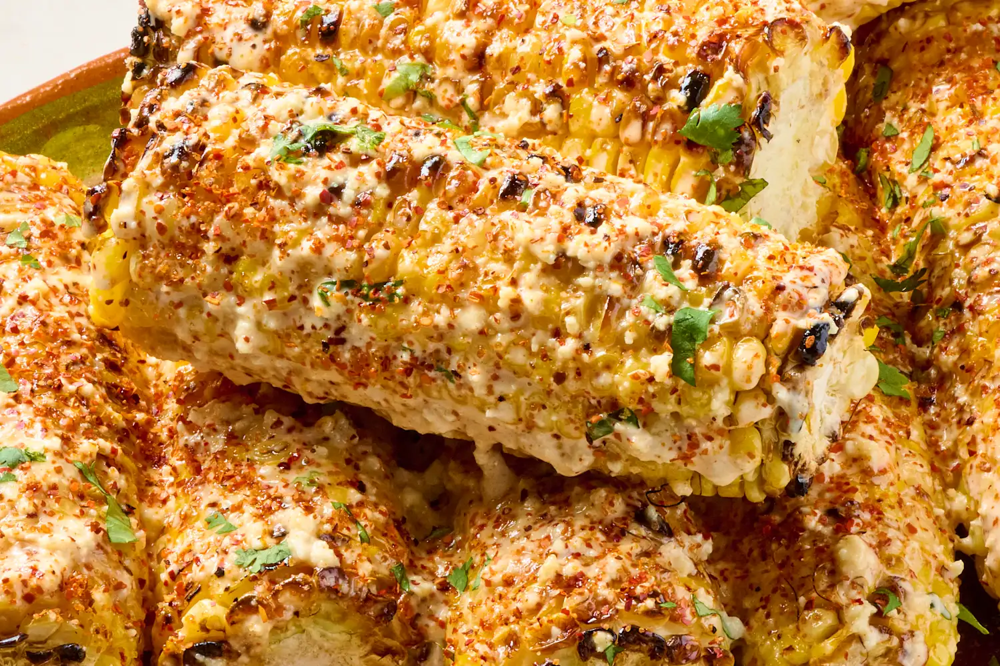

Street-Style Elote

Ingredients
- 4 ears of corn, husked
- 1/4 cup mayonnaise
- 1/4 cup Mexican crema or sour cream
- 1 garlic clove, finely grated
- 1/2 cup crumbled cotija cheese
- 1 tsp chili powder or Tajín
- 2 tbsp chopped cilantro
- 1 tbsp melted butter
- 1 lime, cut into wedges
- Pinch of salt
Goes Well With
- Carne asada
- Chicken quesadillas
- Tacos al pastor
- Black bean salad
- Agua fresca or horchata
Steps
- Heat a grill or grill pan to medium-high. Brush the corn lightly with melted butter.
- Grill the corn for 8–10 minutes, turning every couple of minutes, until it's tender and charred in spots all the way around.
- While the corn cooks, stir together the mayo, crema, grated garlic, and a pinch of salt in a small bowl.
- Spread the cotija on a plate so it's easy to roll the corn in.
- While the corn is still hot, brush or spread each ear with the mayo mixture, then roll it in the cotija so it sticks.
- Dust with chili powder or Tajín, sprinkle with cilantro, and serve right away with lime wedges to squeeze over the top.
Nutrition Facts - Per Ear
| Calories | Protein | Fat | Carbs | Fiber | Sodium |
|---|---|---|---|---|---|
| 270 | 8g | 18g | 22g | 2g | 420mg |